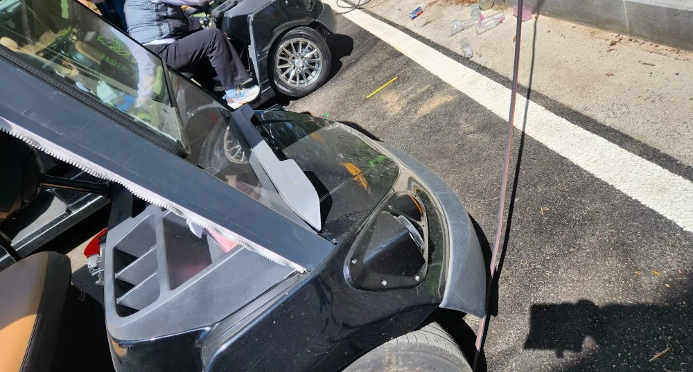
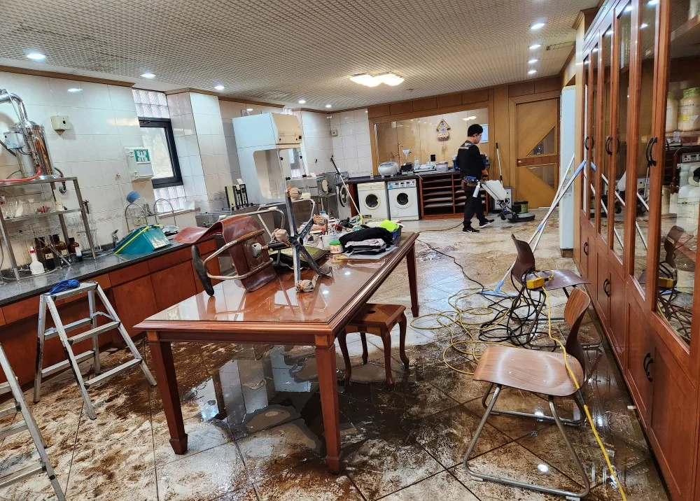
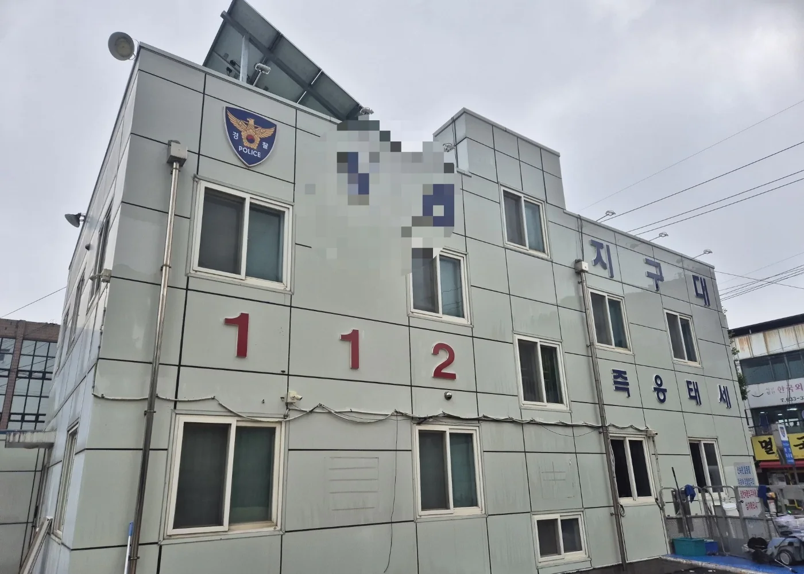
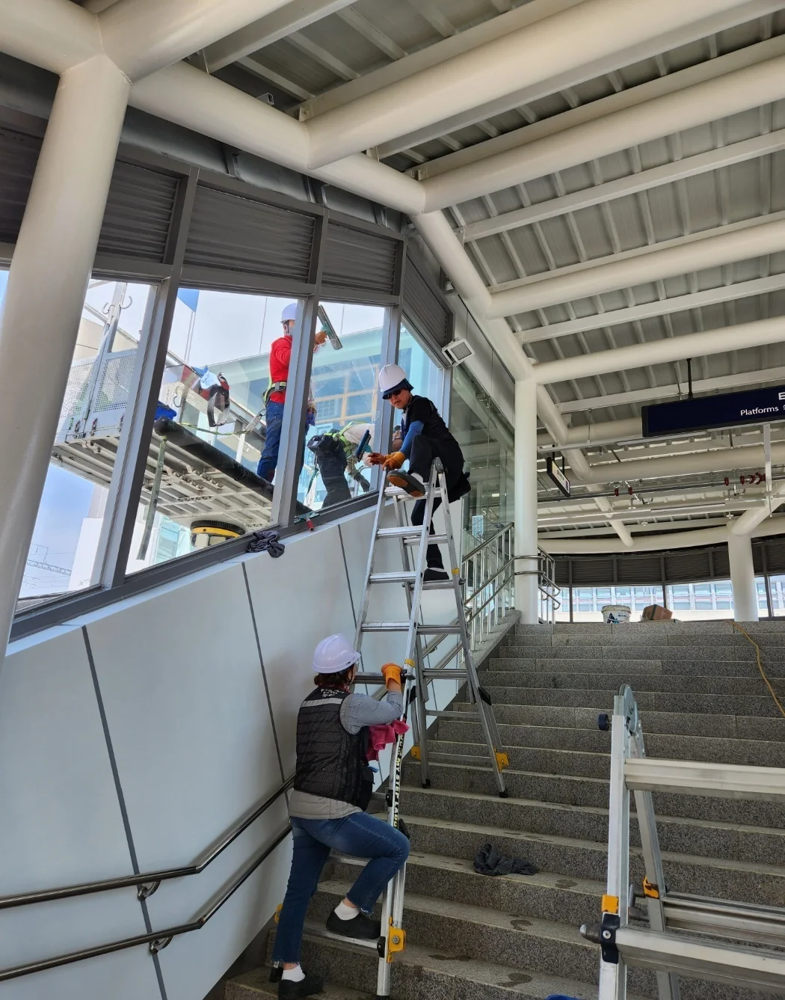

01
카페트청소
사무실, 강당, 회의실의 카페트 바닥에 쌓인 먼지와 얼룩을 장비로 세척합니다.

사무실, 관공서, 학교 같은 사업장을 정해진 주기에 맞춰 관리합니다. 바닥, 화장실, 계단처럼 매일 쓰는 공간을 같은 기준으로 돌봅니다.
사무실, 강당, 회의실의 카페트 바닥에 쌓인 먼지와 얼룩을 장비로 세척합니다.
바닥을 세척해 묵은 때를 벗겨 낸 뒤 왁스를 입혀 광택을 살리고 바닥재를 보호합니다.


골프장 카트의 시트와 차체, 바닥 매트를 청소합니다. 운영 일정에 맞춰 작업합니다.


정해진 주기에 맞춰 사무 공간과 회의실, 탕비실을 관리합니다. 업무에 방해가 되지 않는 시간에 맞춥니다.


민원 공간과 사무 공간을 업무 일정에 맞춰 청소합니다.

교실과 복도, 특별실, 교무실 등 학교 시설을 학사 일정에 맞춰 관리합니다.


화장실 전용 걸레와 도구를 따로 써서 위생적으로 관리합니다.

상주 청소 인력이 필요한 현장에 인력을 배치합니다.
근무 시간과 인원은 현장 상황을 듣고 상담으로 정합니다.
계단 바닥과 난간, 손잡이를 청소합니다. 사람이 많이 다니는 곳이라 자주 손이 가야 하는 곳입니다.

배출 기준에 맞춰 재활용품과 일반 쓰레기를 분리해 정리합니다.
정기청소와 함께 맡기실 수 있습니다. 배출 요일과 방법은 건물 기준에 맞춥니다.
매주 하는 기본 청소에 더해 주차마다 집중해서 돌보는 부분을 달리합니다. 한 달이 지나면 건물 곳곳이 고르게 관리되도록 하는 방식입니다.
주차별 집중 관리 항목은 건물의 용도와 상태를 보고 상담으로 정합니다.